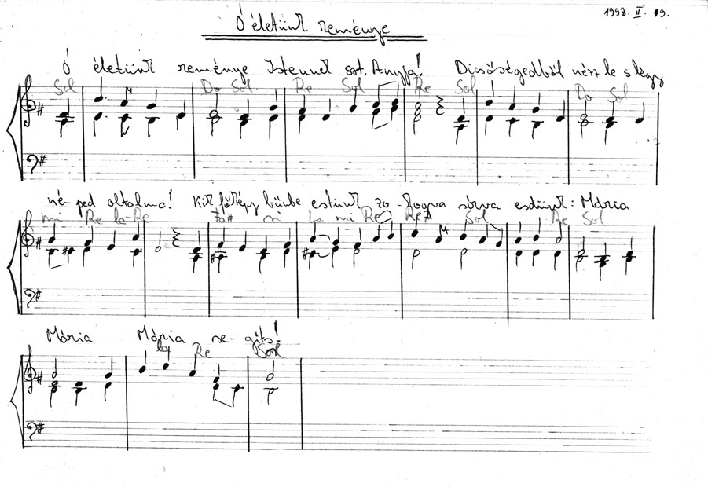
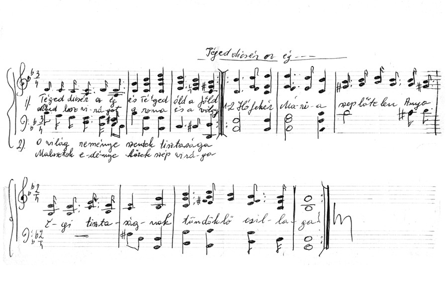

Diatár
A "Veresvizi gyûjtés" kottái
Krucz Jánostól, Nagybányáról kaptam egy gyûjteményt, melyet a helyi plébánia kézzel írott, megsárgult kottáiból gépelt be. Külön köszönet érte! Elküldte a kották digitalizált képét is, így legalább a foszladozó papír mellett elektronikus formában is megmarad. Minden szerkesztés és változtatás nélkül teszem közzé.

